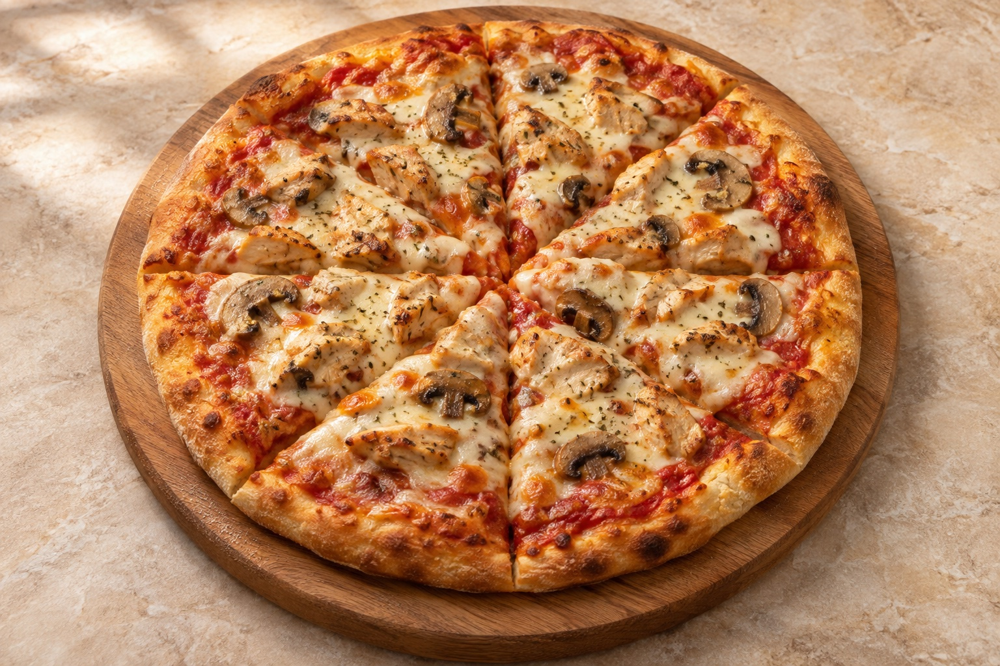

Le sandwich.
Sandwich simple + frites + boisson 33 cl
7,00 €Conditions à confirmer
au restaurant
au restaurant
LE BON PLAN PIZZA À ROUEN.
Une pizza pour vous, une deuxième à moitié prix.
Retrouvez aussi nos tacos, kebabs et burgers, avenue de la Porte des Champs.

LE DUO QUI FAIT PLAISIR.
Choisissez vos recettes dans la carte et appelez O’32 pour en profiter.
Conditions de l’offre à préciser auprès du restaurant.À CHAQUE FAIM SON FAVORI.
LES FORMULES DE LA CARTE.
Sandwich simple + frites + boisson 33 cl
Tacos simple + frites + boisson 33 cl
Petit cheese, mini tacos ou nuggets
+ frites + Capri-Sun
ON SE RETROUVE À ROUEN.
76000 Rouen
Les horaires sont partiellement masqués sur la carte photographiée. Appelez le restaurant pour confirmer l’ouverture avant de vous déplacer.
LE PLUS SIMPLE : UN COUP DE FIL.
Choisissez vos plats et appelez O’32 pour préciser
les options et préparer votre commande.
La commande et le règlement se font avec le restaurant.
Aucun paiement ni commande en ligne sur cette page.